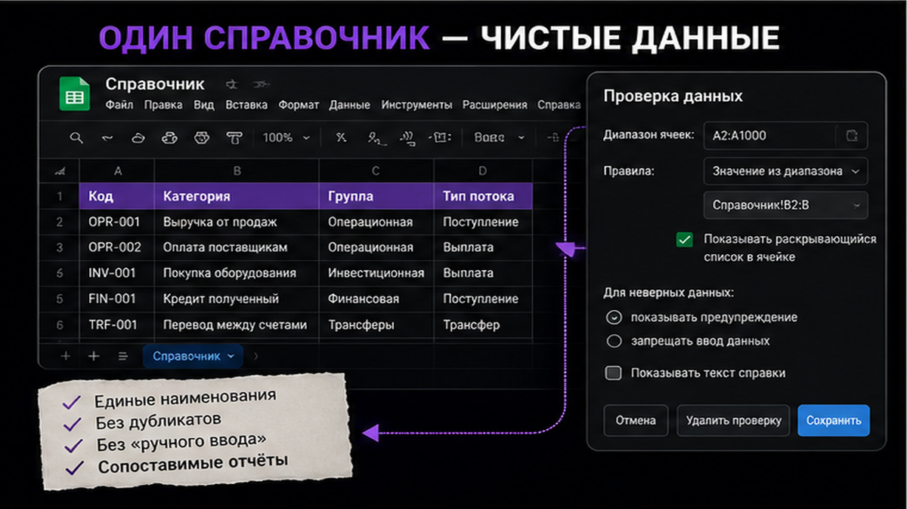
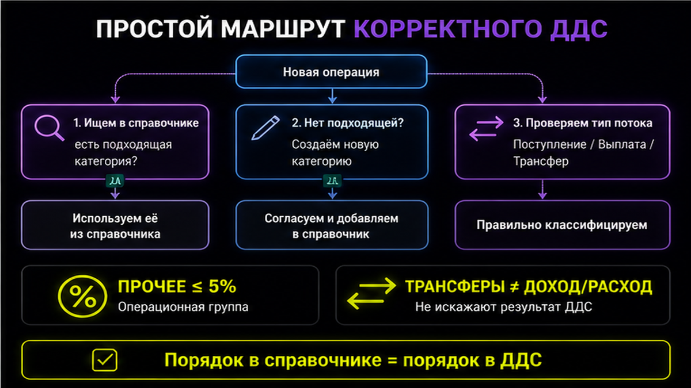

Когда в одной таблице "Аренда", в другой "аренда офиса", а в отчёте собственнику – "Офисные расходы", план-факт ДДС и сводка разъезжаются на сотни тысяч без единой ошибки в сумме. Причина почти всегда одна: нет единого справочника категорий с запретом ручного ввода. За один вечер вы соберёте лист "Справочник" на 15–25 статей, подключите выпадающие списки к операциям и получите один код категории на все отчёты.
Управленческий справочник категорий ДДС – это не план счетов 1С и не КБК. Это ваш словарь "куда ушли и откуда пришли деньги" по кассовому методу. Если уже выстраиваете data foundation – логика "один источник правды" та же, что в материале про Диснейленд для данных. Сырую выписку перед разметкой удобно держать в staging – как в гайде банковская выписка в staging; дальше все статьи тянутся из одного справочника.
Я почти всегда останавливаю команду, которая сразу тащит 200 строк "на будущее". На старте хватает 5–7 статей поступлений и 10–15 статей платежей – без микро-статей вроде "ручки для офиса". Верхний уровень держите в четырёх группах: операционная, инвестиционная, финансовая и перемещения (переводы между своими счетами и кассами). Внутри операционной – ветки "Поступления средств" и "Выплаты средств".
| Группа | Примеры статей | Чего не делать |
|---|---|---|
| Операционная | Выручка, оплата от клиентов; аренда, ФОТ, маркетинг | Не путать с инвестициями в оборудование |
| Инвестиционная | Покупка ОС, вложения в проект | Не тащить сюда текущий OPEX |
| Финансовая | Кредиты, проценты, дивиденды | Не смешивать с выручкой |
| Перемещения | Перевод р/с → р/с, снятие в кассу | Не считать доходом или расходом |
По ПБУ 23/2011 в бухгалтерском ОДДС потоки делят на текущие, инвестиционные и финансовые. Для управленки я добавляю четвёртую группу "перемещения": иначе переводы раздувают выручку и расходы. Практичный способ набрать статьи – выписки за 3 месяца, сгруппировать платежи по типам. Расширяйте по существенности: новая статья, если операция даёт больше 5% оборота два месяца подряд. Глубже четырёх уровней не уходите. Названия короткие: длинные подписи обрезаются в отчёте.
Сделайте: 15–25 активных строк на первый месяц. Не делайте: копировать план счетов 1С один к одному – управленческие статьи живут отдельно и маппятся при необходимости.

Лист "Справочник" – как книга учёта названий: все листы "Движения", "План", "Факт" и staging читают только отсюда. Колонки минимум: код, группа, направление (приход / расход / перевод), название, активна (да/нет), комментарий для команды. Код – короткий латиницей или цифрой: OPX_RENT, чтобы SUMIFS не ломались на опечатках в кириллице.
Справочник!D2:D100 (названия).DDS_Categories на активные названия – его подключите к план-факту и дашборду.Схема: банковская строка (staging) → выбор категории из списка → SUMIFS/QUERY на "Отчёт" и "План-факт" по тому же коду
В Excel логика та же: Данные → Проверка данных → Список. Google Sheets удобнее для совместного ввода. Доступ к книге ограничьте: посторонним не нужны полные назначения с контрагентами – зона 152-ФЗ и коммерческой тайны. Если позже подключите ИИ к разметке staging, сначала маскируйте ИНН, ФИО и суммы; словарь статей всё равно должен быть вашим.
Сделайте: один источник названий и жёсткий отказ ввода. Не делайте: дубли "Аренда" и "Аренда офиса" – оставьте одну строку и пояснение в комментарии.

Статья "Прочее" – чёрная дыра управленки: туда ссылаются, когда лень выбрать категорию, и через квартал половина OPEX без лица. Методологи справочников ДДС прямо не рекомендуют заводить "Прочее"; если всё же завели – лимит не больше 5% оборота и еженедельный разбор: каждая строка либо получает новую статью в справочнике, либо переклассифицируется.
Переводы между своими счетами – отдельная группа "Перемещения", направление "перевод". Принцип простой: одна строка = одно движение денег – дата, счёт, сумма, категория из справочника. Перевод не увеличивает выручку и не увеличивает операционный расход – иначе собственник видит "рост продаж" из-за перекладки с расчётного на валютный.
Сделайте: регламент "Прочее" на одной странице A4. Не делайте: учитывать перевод как "Поступление" на одном счёте без зеркального "Перемещение" на другом.
Справочник без дисциплины команды – мёртвый файл. Памятка на один экран: как выбрать статью из списка, куда писать, если статьи нет (не придумывать синоним), как отметить перевод. Запрет простой: никаких свободных текстов в колонке категории – только значения из "Справочник".
По открытым шаблонам первичная сборка такого ДДС занимает около двух часов, регулярное обновление – около получаса, если справочник не расползся. Живые разборы таблиц и типовых ошибок – в Telegram "Финансист, который кодит".
Сделайте: один шаблон операции для всех отделов. Не делайте: отдельную "упрощённую" таблицу для маркетинга без справочника – оттуда вернётся хаос в сводку.
Когда категории стабильны, подключайте отчёты. Цепочка: лист "Движения" (или staging) → "Отчёт" через SUMIFS/QUERY по коду из справочника → план-факт ДДС в Google Sheets на тех же статьях. Принцип: статьи бюджета равны статьям факта, иначе план-факт снова разъедется. Именованный диапазон DDS_Categories – единственная точка, откуда validation и сводки берут список: добавили статью только в "Справочник", и отчёты подхватили её сами.
Минимальный набор листов: "Движения", "Отчёт", "Справочник". Дашборд читает агрегаты, не сырые назначения. Сверка: сумма по категориям на "Факт" = сумма на "Сводка"; если нет – ищите в "Движения" категории вне справочника (validation обошли или лист старый).
Итоговый вердикт: единый справочник категорий ДДС – фундамент, без которого план-факт и дашборд рисуют красивую ложь. Сначала справочник и запрет ввода, потом автоматизация и AI-категоризация – не наоборот.
Шаблоны финконтура, разбор справочников и связка с план-фактом – в закрытом клубе KODA.
Сделайте: один DDS_Categories на всю книгу. Не делайте: править формулы на "Отчёт" при каждой новой статье – правьте только "Справочник".
DDS_Categories для план-факта и дашборда.План счетов – бухучёт по правилам учётной политики. Справочник категорий ДДС – управленческие статьи по факту движения денег (кассовый метод). Связать можно через таблицу соответствия, но копировать 1:1 не нужно: собственнику важны "маркетинг" и "логистика", а не субсчёт 26.
Можно, но на старте это вредно: путают команду и дробят аналитику. Добавляйте статьи по правилу существенности (>5% оборота два месяца подряд), не глубже четырёх уровней.
Оба работают; validation по смыслу одинакова. Sheets удобнее для совместного ввода и доступа финдиректора с собственником без версий "файл_финал2.xlsx".
Группа "Перемещения", направление "перевод", не приход и не расход. В отчёте перевод не попадает в чистую выручку и не раздувает OPEX.
Не вводить текст руками. Заявка владельцу справочника → новая строка в "Справочник" → повторный ввод операции. Иначе снова получите "Аренда" и "аренда офиса" в разных отчётах.
После того как справочник и validation стоят. AI или правила по контрагенту ускоряют разметку staging, но словарь статей должен быть вашим и единым – иначе модель придумает свои синонимы.